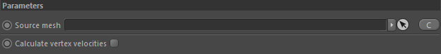

Parameters

Source mesh
Drop here the Cinema 4D mesh to inport and convert into an Effex framework mesh.
Calculate vertex velocities
Deformed meshes (like animated characters for example) that are also used as source for a Volume obstacle have different vertex motions.
In order to let these deformations affect a fluid simulation correctly, you need to activate this option.
The vertex velocities are stored into the Effex mesh vertex property 'Velocity'.